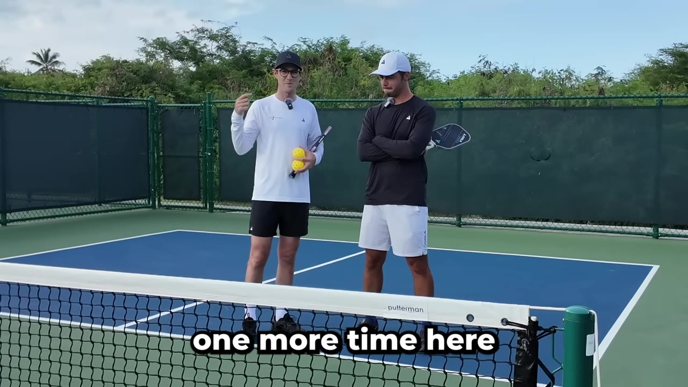
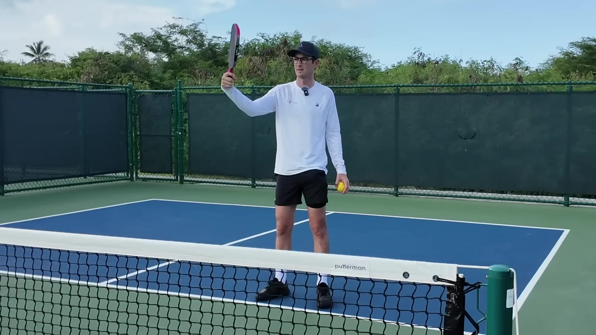
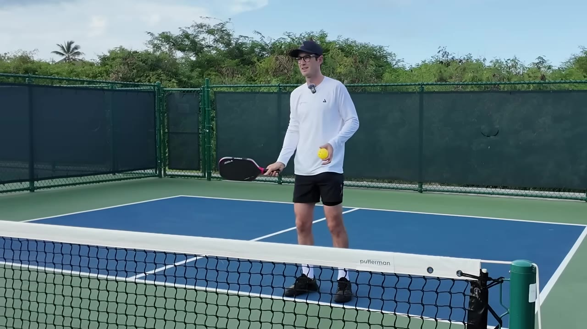
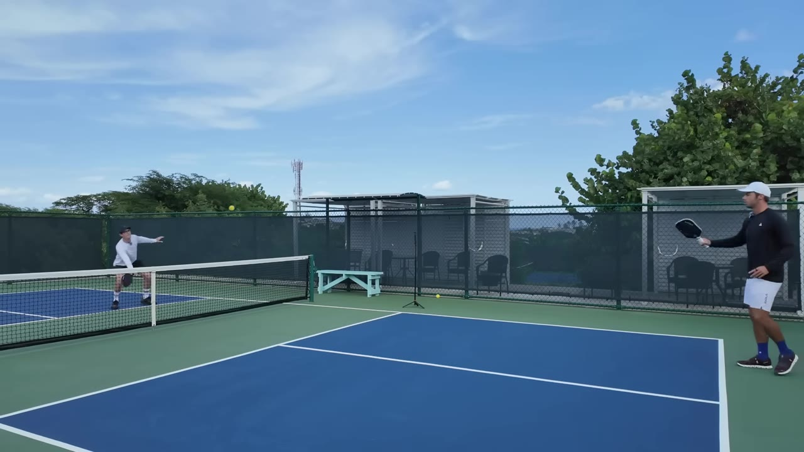
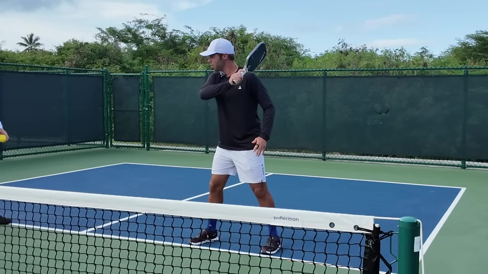
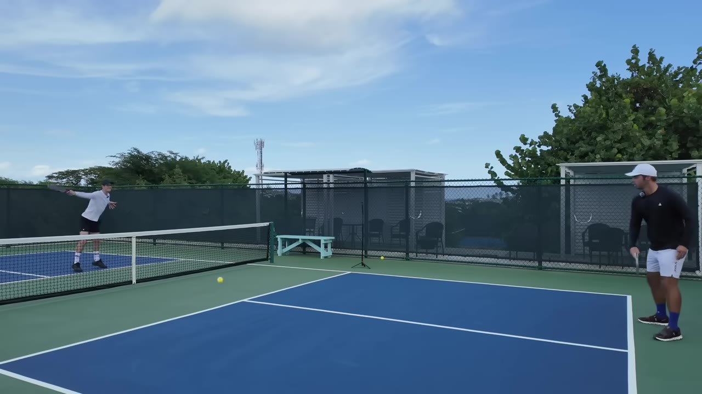
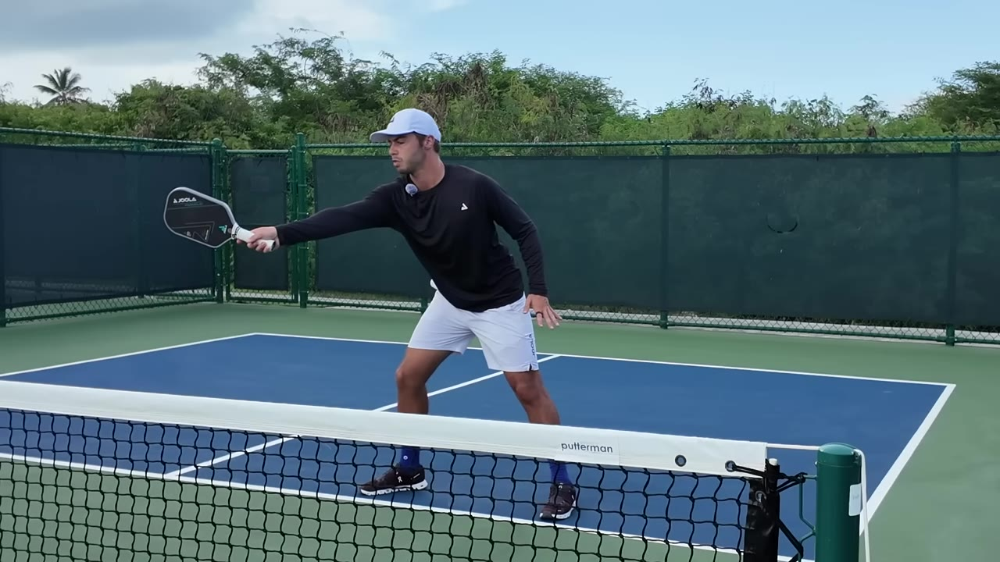

World
Watch on YouTubeThe fourth shot is what you hit when your drop comes back and you are stepping in to drive. Josh can win points and get to the kitchen; what he does not do is punish the ball that floats up at him. So he hands the paddle problem to Ben Johns, the world #1, and asks to be told what is wrong.

The framing Ben lands on right away: this is one of the easiest things to improve because it hands you free points — but "easiest to improve" is not the same as "easy."
I'm glad you said easiest to improve. I thought you were going to say easiest, and I was like, that's not that easy for me.— Ben Johns
First fault Ben spots: Josh drops the paddle head on the backhand roll. That motion is a flick for generating power from above the level of the net. Below the net it is just hard to time.

Josh's forehand contacts too far to the side of his body. Part of that is grip: the more Continental you are, the harder it is to turn the face forward enough to meet the ball out front. Ben demonstrates by taking a severe Continental grip and stretching out — the reach forward shrinks the more extreme the grip gets.

The answer is not bigger movement so much as a smaller target zone. Find the one spot — for Ben it is just off the right foot — where his extension is best, then slide laterally to bring every ball to that same point.
What you really don't want is when I drop straight to the center of your body. You're never going to get a good attacking ball from there.— Ben Johns
When players reach full extension they tend to open the wrist, and the ball goes up instead of over with topspin. On a higher ball they flick the wrist up to compensate. Both are wrong.

When the ball sits near the level of the net and you want real power, the engine is hip and shoulder rotation, not the arm — but stay low enough that your eyes are down near the contact point.
The awkward ball is the one too high to roll but not high enough to smash. Most players go straight through it and, afraid of sending it long, hold back. Ben's answer: close the paddle face, still swing up, but finish across your body in what he calls the Chariot whip.

You can get a ton of pace and a ton of spin, and it's never going to go out.— Ben Johns
Ben credits the shot to Tyson — one of his best. As a righty it also throws sidespin that kicks the ball off to the right after it lands.
The shoulder-height backhand is the least intuitive ball in the set. The wrist alone cannot generate power there, so the move is rotational: get the paddle horizontal, turn the face down so the ball does not fly, then rotate and snap — like loading a spring.

The error Josh keeps making is rolling the wrist over across the body. Keep the wrist back; it snaps at the end but never rolls. Turn the wrist down enough and the ball lands short in the kitchen — which is the signal that you have free license to unload.
All the mechanics are the easy part. The hard part is choosing among the options — at least six out of the air, more off the bounce — based on what the other player is doing. Contact the ball way out in front and you can see, with your peripheral vision, where the opponent is and how fast they are closing.

Against someone sprinting to the line, Ben takes pace off and dives the ball at their feet for an awkward midcourt half-volley. Against someone hesitant, he has free license to do whatever he wants. The closing chore Ben hands Josh by the end:
look to get to your forehand and put them under pressure.
pick your spot from where they actually are.
one repeatable spot, out in front.
slide to bring the ball to that point — very important.
If they can't score against you, you have all the time in the world to do your own scoring.— Ben Johns